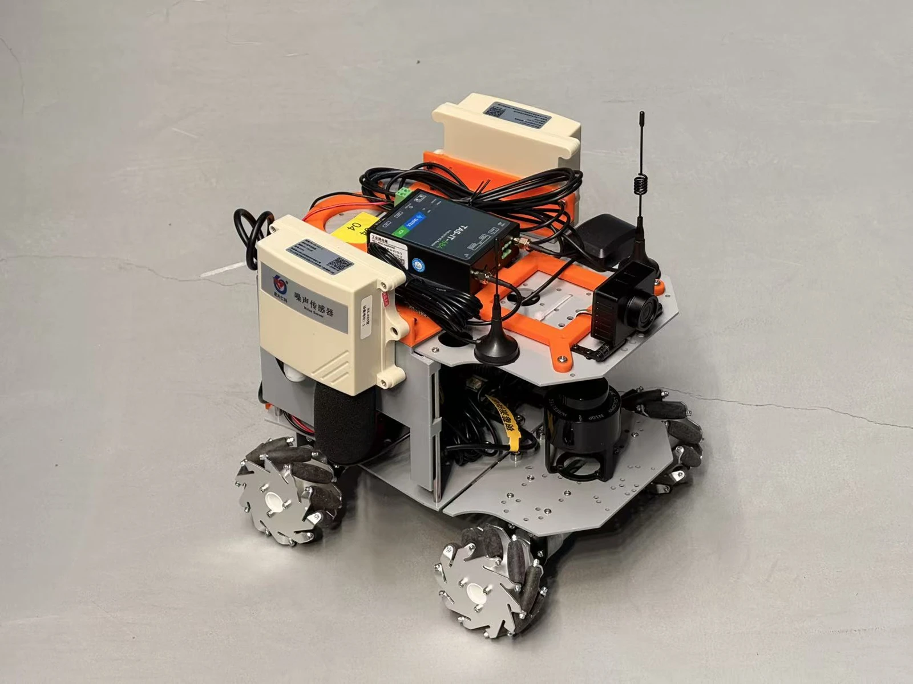
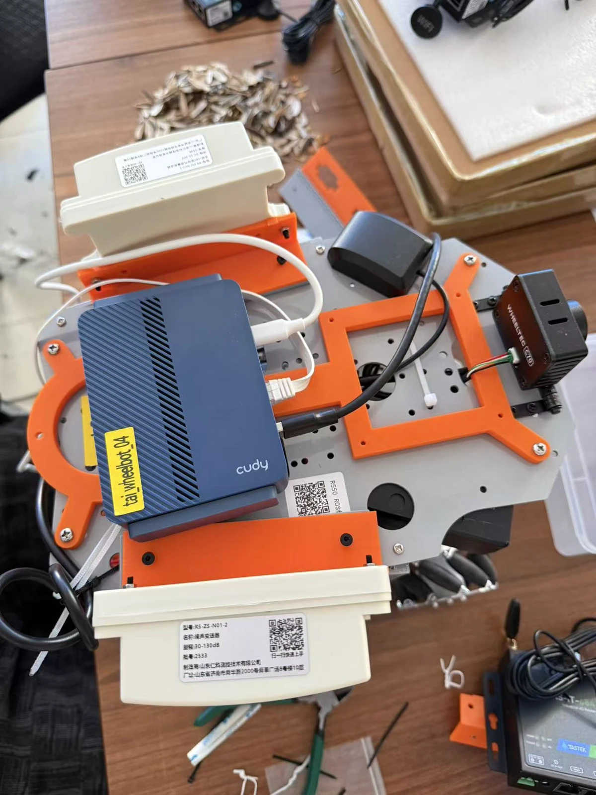

关于 / ABOUT
从场景定义产品，
用系统与数据完成闭环。
我主要关注智能硬件产品经理岗位。建筑学训练帮助我理解空间和使用者；硬件工作让我推进需求、整机方案和样机交付；数据分析进一步帮助我检验体验与做出迭代判断。
工作方法
在同一个产品里，同时考虑用户为什么需要它、硬件怎样实现、体验是否成立。空间、系统与数据不是三个割裂的领域，而是推进产品决策的连续视角。
01空间场景与使用关系
02系统能力与整机方案
03数据行为与体验验证
04产品定义、取舍与迭代
六方式 / 项目工作记录
把方案带到实物现场。
来自项目归档的真实工作照片：移动平台整机与工作台上的接线、模块和装配状态。网关的外壳、板卡与拆机记录收录在网关案例中。


联系